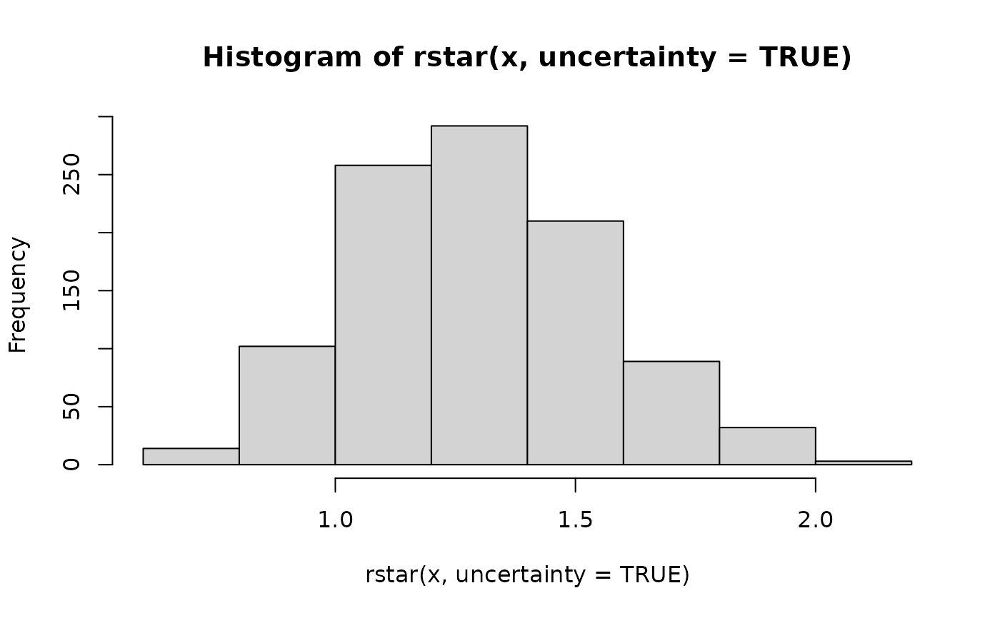
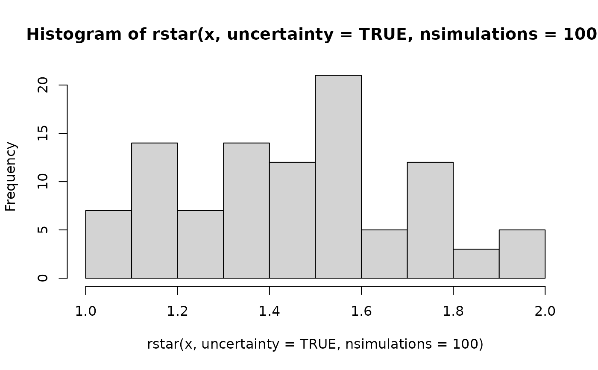

The rstar() function generates a measure of convergence for MCMC draws
based on whether it is possible to determine the Markov chain that generated
a draw with probability greater than chance. To do so, it fits a machine
learning classifier to a training set of MCMC draws and evaluates its
predictive accuracy on a testing set: giving the ratio of accuracy to
predicting a chain uniformly at random.
Usage
rstar(
x,
split = TRUE,
uncertainty = FALSE,
method = "rf",
hyperparameters = NULL,
training_proportion = 0.7,
nsimulations = 1000,
...
)Arguments
- x
(draws) A
draws_dfobject or one coercible to adraws_dfobject.- split
(logical) Should the estimate be computed on split chains? The default is
TRUE.- uncertainty
(logical). Indicates whether to provide a vector of R* values representing uncertainty in the calculated value (if
TRUE) or a single value (ifFALSE). The default isTRUE.- method
(string) The machine learning classifier to use (must be available in the caret package). The default is
"rf", which calls the random forest classifier.- hyperparameters
(named list) Hyperparameter settings passed to the classifier. The default for the random forest classifier (
method = "rf") islist(mtry = floor(sqt(nvariables(x)))). The default for the gradient-based model (method = "gbm") islist(interaction.depth = 3, n.trees = 50, shrinkage = 0.1, n.minobsinnode = 10).- training_proportion
(positive real) The proportion (in
(0,1)) of iterations in used to train the classifier. The default is0.7.- nsimulations
(positive integer) The number of R* values in the returned vector if
uncertaintyisTRUE. The default is1000.- ...
Other arguments passed to
caret::train().
Details
The rstar() function provides a measure of MCMC convergence based
on whether it is possible to determine the chain that generated a
particular draw with a probability greater than chance. To do so, it fits a
machine learning classifier to a subset of the original MCMC draws (the
training set) and evaluates its predictive accuracy on the remaining draws
(the testing set). If predictive accuracy exceeds chance (i.e. predicting
the chain that generated a draw uniformly at random), the diagnostic
measure R* will be above 1, indicating that convergence has yet to occur.
This statistic is recently developed, and it is currently unclear what is a
reasonable threshold for diagnosing convergence.
The statistic, R*, is stochastic, meaning that each time the test is run,
unless the random seed is fixed, it will generally produce a different
result. To minimize the implications of this stochasticity, it is
recommended to repeatedly run this function to calculate a distribution of
R*; alternatively, an approximation to this distribution can be obtained by
setting uncertainty = TRUE, although this approximation of uncertainty
will generally have a lower mean.
By default, a random forest classifier is used (method = "rf"), which tends
to perform best for target distributions of around 4 dimensions and above.
For lower dimensional targets, gradient boosted models (called via
method = "gbm") tend to have a higher classification accuracy. On a given
MCMC sample, it is recommended to try both of these classifiers.
References
Ben Lambert, Aki Vehtari (2020) R*: A robust MCMC convergence
diagnostic with uncertainty using gradient-boosted machines.
arXiv preprint arXiv:2003.07900.
See also
Other diagnostics:
ess_basic(),
ess_bulk(),
ess_quantile(),
ess_sd(),
ess_tail(),
mcse_mean(),
mcse_quantile(),
mcse_sd(),
pareto_diags(),
pareto_khat(),
rhat(),
rhat_basic(),
rhat_nested()
Examples
# \donttest{
if (require("caret", quietly = TRUE) && require("randomForest", quietly = TRUE)) {
x <- example_draws("eight_schools")
print(rstar(x))
print(rstar(x, split = FALSE))
print(rstar(x, method = "gbm"))
# can pass additional arguments to methods
print(rstar(x, method = "gbm", verbose = FALSE))
# with uncertainty, returns a vector of R* values
hist(rstar(x, uncertainty = TRUE))
hist(rstar(x, uncertainty = TRUE, nsimulations = 100))
# can use other classification methods in caret library
print(rstar(x, method = "knn"))
}
#> randomForest 4.7-1.2
#> Type rfNews() to see new features/changes/bug fixes.
#>
#> Attaching package: ‘randomForest’
#> The following object is masked from ‘package:ggplot2’:
#>
#> margin
#> [1] 2.2
#> [1] 1.2
#> Iter TrainDeviance ValidDeviance StepSize Improve
#> 1 2.0794 -nan 0.1000 0.0164
#> 2 2.0007 -nan 0.1000 -0.0397
#> 3 1.9414 -nan 0.1000 -0.0396
#> 4 1.8824 -nan 0.1000 -0.0480
#> 5 1.8299 -nan 0.1000 -0.0616
#> 6 1.7842 -nan 0.1000 -0.0264
#> 7 1.7454 -nan 0.1000 -0.0780
#> 8 1.7063 -nan 0.1000 -0.0227
#> 9 1.6656 -nan 0.1000 -0.0256
#> 10 1.6192 -nan 0.1000 -0.0399
#> 20 1.2926 -nan 0.1000 -0.0332
#> 40 0.8985 -nan 0.1000 -0.0259
#> 50 0.7543 -nan 0.1000 -0.0373
#>
#> [1] 1.8
#> [1] 1.933333


#> [1] 1.533333
# }